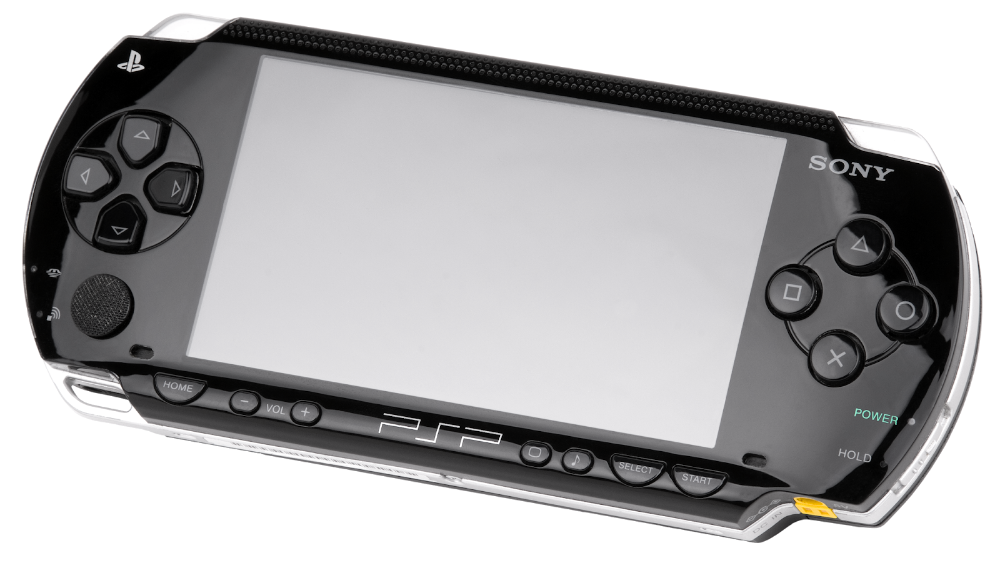
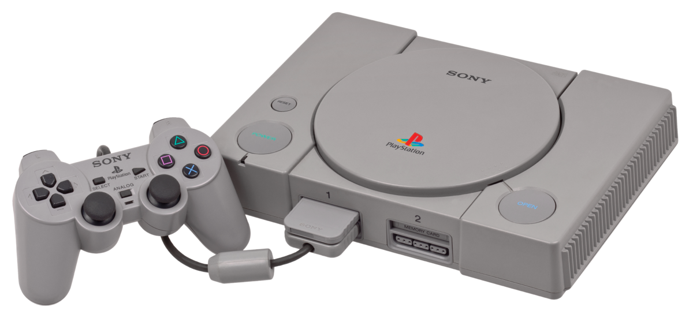
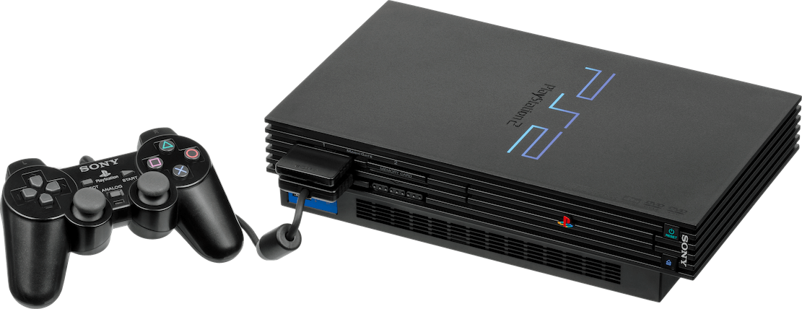
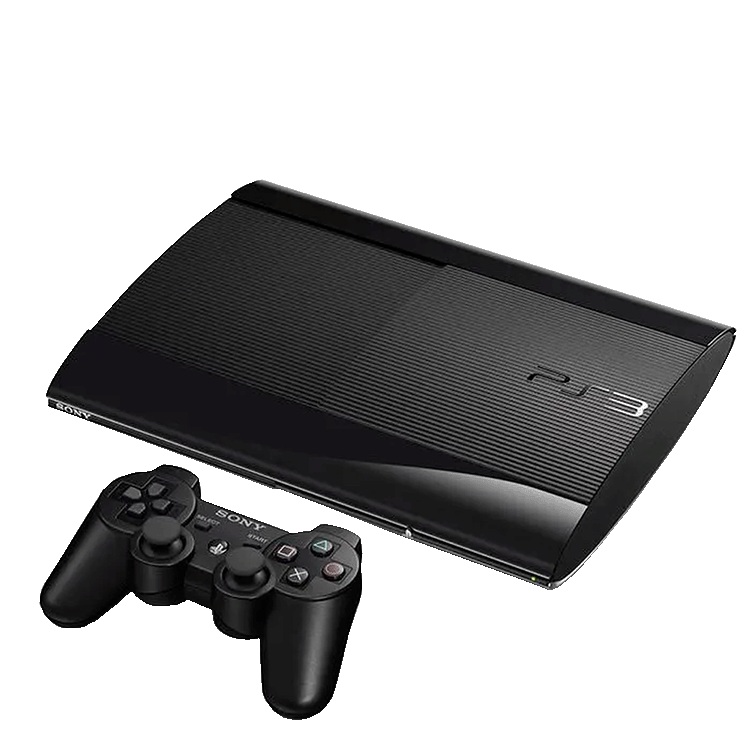
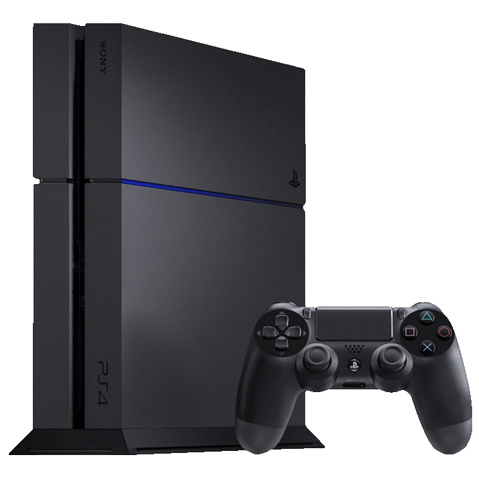
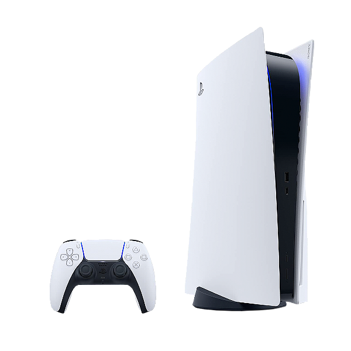

Playstation
PlayStation Portable (PSP)
Lançado em dezembro de 2004, a PlayStation Portable, ou simplesmente PSP, foi a primeira consola portátil lançado pela Sony, lançado para competir com a Nintendo DS que até então dominava absoluta no mercado de portáteis. A consola utilizou a mídia UMD (Universal Media Disc) para seus jogos. Continha 32 MB de memória interna, expansível através de cartões Memory Stick PRO Duo, também suportava conexões Wi-Fi. A versão 2000 era mais leve e mais fina que a original. Posteriormente foram lançados o PSP 3000 e o PSP Go, este último com controles retráteis.
PlayStation (PS1)
Foi lançado em 3 de dezembro de 1994, no Japão, e em 29 de setembro de 1995, nos Estados Unidos. Desde o seu lançamento até 2006 (quando sua produção foi extinta), a PlayStation vendeu mais de 103 milhões de unidades. Inicialmente PlayStation seria um leitor de CD-ROM para o Super Nintendo Entertainment System, o SNES-CD, a ser produzido em conjunto com a Nintendo.[2] Durante as negociações para o lançamento, o acordo entre as empresas foi rompido. Então o engenheiro Ken Kutaragi convenceu os executivos da Sony a continuar com o projeto. Foi aí que nasceu a divisão Sony Computer Entertainment (atualmente Sony Interactive Entertainment), com o objetivo de implementar no mercado uma nova consola de videogame: a PlayStation.
PlayStation 2 (PS2)
O PlayStation 2 (PS2) é o segundo console de videogame produzido pela Sony Computer Entertainment, após o PlayStation original. Foi inicialmente lançado no dia 4 de março de 2000 no Japão, no dia 26 de outubro na América do Norte, e posteriormente, no dia 24 de Novembro na Europa. O PlayStation 2 possui hoje o título da consola de videogame mais vendida na história: foram mais de 150 milhões de unidades comercializadas no mundo.
No Brasil, de acordo com a Sony, o PlayStation não foi vendido oficialmente devido à pirataria e uma disputa judicial pelos nomes Playstation e PS2, pois estas marcas já estavam registadas por uma empresa. Apesar disso, houve um grande "mercado informal" de consolas e jogos. Em 2009 a Sony do Brasil finalmente lançou a linha PlayStation 2 no país, vendendo ainda jogos de PlayStation 3.
PlayStation 3 (PS3)
O PlayStation 3 (PS3) é o terceiro console de videogame produzido pela Sony Computer Entertainment e o sucessor do PlayStation 2. Foi lançado em 12 de novembro de 2006 no Japão, 17 de novembro na América do Norte e em 29 de março de 2007 na maior parte da Europa e na Oceania. No Brasil foi lançado oficialmente em 11 de agosto de 2010.
PlayStation 4 (PS4)
O PlayStation 4 (PS4) é um console produzido pela Sony. Veio após a PlayStation 3 como console de mesa e após a PlayStation Vita na linha geral de consoles da Sony. O dia do lançamento da consola foi 15 de novembro de 2013 nos Estados Unidos e em 29 de novembro de 2013 na América Latina (incluindo Brasil) e na Europa, de acordo com os dados divulgados pela própria Sony.[5] O preço da consola é de US$399.00 ou algo em torno de R$1000,00 nos Estados Unidos da América, enquanto no Brasil o preço atingiu R$3.999,00 no lançamento.[6] Atualmente o console é montado no Brasil tendo o seu preço reduzido para R$2600,00 em um primeiro momento. A consola introduz o controle Dualshock 4, que apresenta novas funções em relação ao Dualshock 3 e Dualshock 2. A Sony revelou a PlayStation 4 Pro (PS4 Pro), versão revista e mais potente do PS4 confirmada pela fabricante semanas antes da E3 2013, durante uma "demonstração técnica" em Nova York, em 7 de setembro
PlayStation 5 (PS5)
O PlayStation 5 (PS5)[8] foi lançado mundialmente em 12 de novembro de 2020 e, ao lado do Xbox Series X e S lançados no mesmo mês, faz parte da nona geração deconsoles de videogame. As primeiras notícias do PS4 vieram de Mark Cerny em uma entrevisa à Wired em abril de 2019.[9] A Sony pretende que o PlayStation 5 seja seu console de próxima geração e seja lançado em todo o mundo até o finalde 2020.[10] No início de 2019, o relatório financeiro da Sony para o trimestre encerrado em 31 de março de 2019, afirmou que o novohardware de próxima geração estava em desenvolvimento, mas não seria lançado antes de abril de 2020